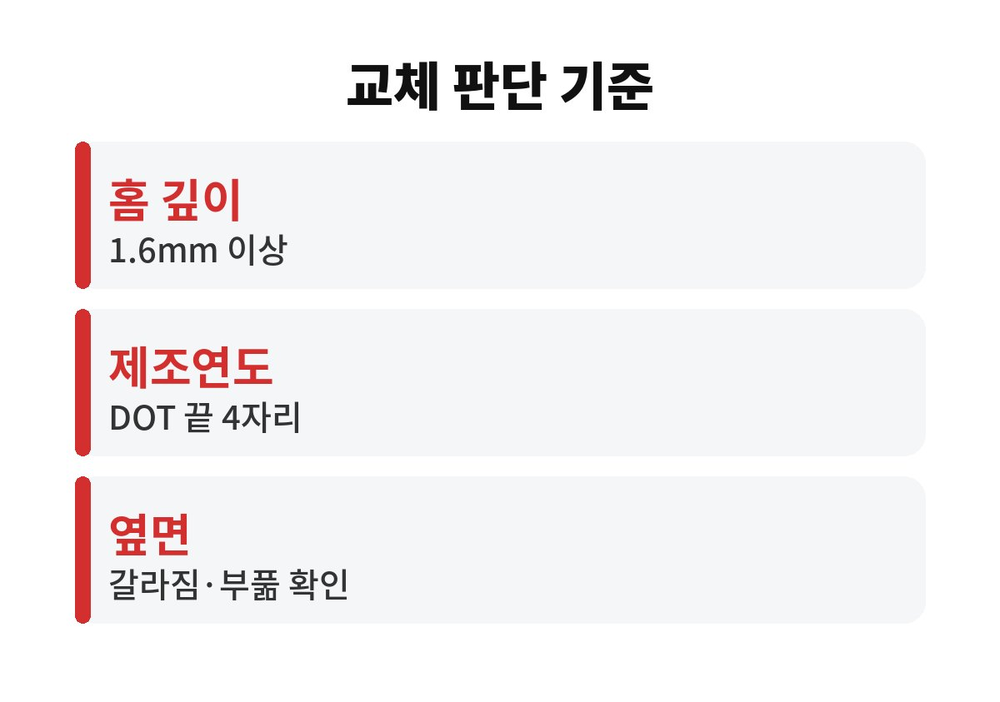
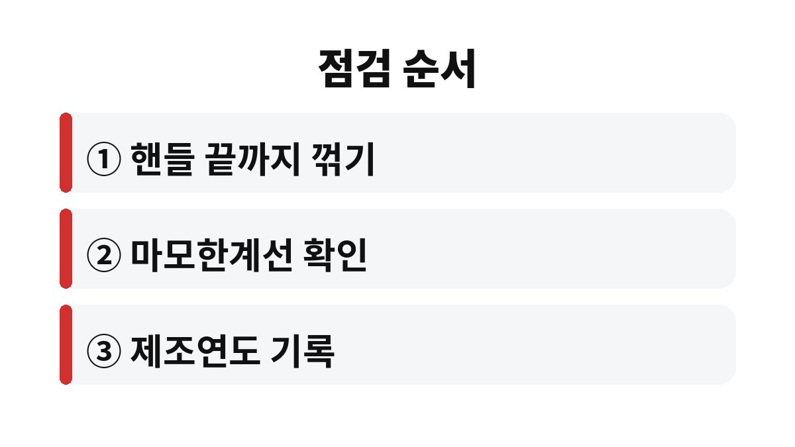

타이어 교체 시기는 홈 깊이 1.6mm 마모한계와 옆면에 찍힌 제조연도 두 가지로 판단한다.
홈이 남아 있어도 고무가 오래되면 갈라지고, 고무가 새것이어도 홈이 닳으면 빗길과 눈길에서 먼저 미끄러진다.
자동차 및 자동차부품의 성능과 기준에 관한 규칙은 타이어 접지부 홈 깊이를 1.6mm 이상으로 정한다.
이보다 얕으면 정기검사에서 부적합 판정을 받을 수 있다.
다른 하나는 제조연도다.
법으로 정한 사용 연한은 없지만 타이어 제조사들은 주행거리가 적어도 일정 기간이 지나면 점검과 교체를 권한다.
| 확인 항목 | 기준 | 어디서 보나 |
|---|---|---|
| 홈 깊이 | 1.6mm 이상(법정 한계) | 홈 속 작은 돌기 마모한계선 |
| 제조 시기 | 옆면 4자리 숫자 | DOT 표기 끝부분 |
| 옆면 상태 | 갈라짐·부풂 없음 | 타이어 옆면 전체 |
| 편마모 | 안쪽·바깥쪽 차이 없음 | 핸들을 끝까지 꺾고 확인 |

타이어 옆면에서 DOT로 시작하는 긴 문자열을 찾고, 끝의 네 자리 숫자만 보면 된다.
앞 두 자리는 생산 주차, 뒤 두 자리는 연도다.
예를 들어 2223이라면 2023년 22번째 주에 만든 타이어라는 뜻이다.
이 숫자는 한쪽 면에만 찍힌 경우가 많다.
바깥쪽에서 안 보이면 안쪽 면에 있으니 손전등을 비춰 보면 된다.
법에서 정한 교체 연한은 없다.
다만 고무는 햇빛과 열, 오존에 닿으면서 조금씩 딱딱해지고, 딱딱해진 고무는 같은 홈 깊이라도 노면을 덜 붙잡는다.
그래서 제조사 안내에서는 일정 기간이 지나면 전문점에서 상태를 점검받으라고 권한다.
지하주차장에만 세워 두는 차와 야외 주차가 잦은 차는 같은 연식이라도 옆면 상태가 꽤 다르다.
숫자만 보고 바로 버리기보다 옆면 잔금과 손으로 눌렀을 때의 탄력을 함께 보고 판단한다.
나는 계절이 바뀌는 달에 한 번, 주유하는 날을 골라 이 순서로 본다.
공구 없이 동전 하나와 휴대폰 손전등이면 충분하다.

앞바퀴굴림 차는 앞바퀴가 더 빨리 닳는다.
한 바퀴만 보고 괜찮다고 넘기면 나머지 바퀴의 한계를 놓친다.
1.6mm는 법적 최저선이지 겨울 노면에서 충분하다는 뜻이 아니다.
나는 동전 점검에서 감투가 절반쯤 보이기 시작하면 첫눈 전에 교체 견적을 받아 둔다.
주행이 적은 차라면 반대로 홈은 넉넉한데 제조연도가 오래된 경우가 많아 숫자부터 본다.
트렁크 아래 스페어타이어는 한 번도 안 썼다는 이유로 몇 년씩 방치되기 쉽다.
막상 펑크가 났을 때 꺼내 보면 공기압이 빠져 있거나 옆면이 갈라져 있는 일이 있다.
겨울용 타이어를 따로 보관해 왔다면 장착하기 전에 같은 방법으로 홈 깊이와 제조연도를 먼저 본다.
겨울용 타이어는 눈길 성능을 위해 홈이 깊게 설계돼 있어, 법정 한계에 닿기 전이라도 눈길 제동력이 먼저 떨어진다.
보관할 때는 직사광선이 없는 서늘한 곳에 눕혀 두고, 위에 무거운 짐을 올리지 않는다.
교체 주기는 차종과 타이어 종류마다 달라 차량 설명서의 권장 규격과 정비소 진단을 함께 본다.
다음 점검 때는 홈 깊이와 함께 공기압도 같이 재 두면 편마모를 일찍 잡을 수 있다.
참고 자료: 법제처 국가법령정보센터 「자동차 및 자동차부품의 성능과 기준에 관한 규칙」(2026년 11월 확인) · 한국교통안전공단 「자동차 정기검사 안내」(2026년 11월 확인)
※ 2026년 기준 공공기관 안내를 바탕으로 정리한 글이며, 차종과 연식에 따라 기준이 다를 수 있어 차량 설명서와 공식 안내를 함께 확인하길 바란다.